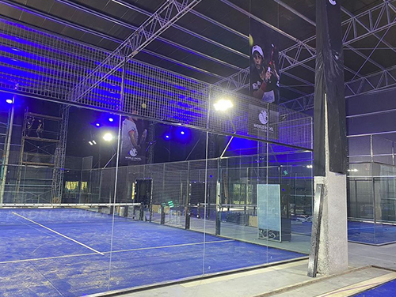
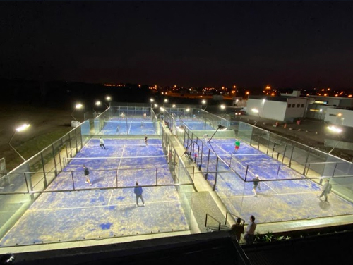
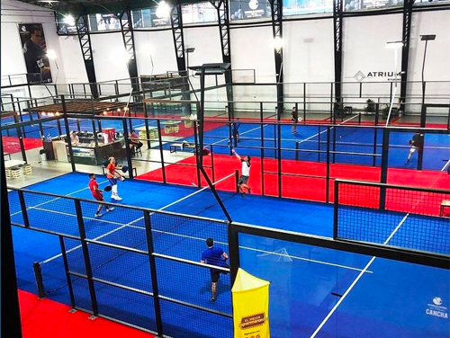

Our Courts
Our courts are covered with synthetic grass, which makes the game more interesting, since the ball takes more spin when hitting the field. Other benefits of synthetic grass is that it reduces the chances of injury as it cushions the impact. Another reason why you should choose our facilities is because we have long hours to be able to rent them.


